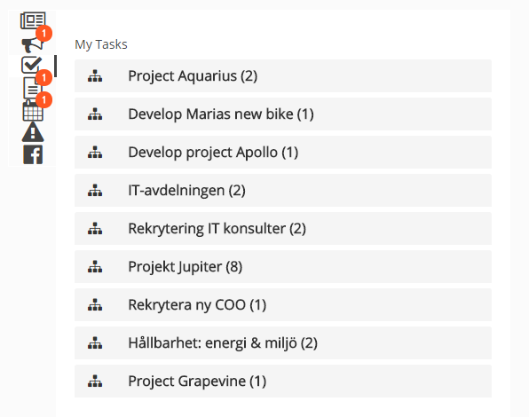
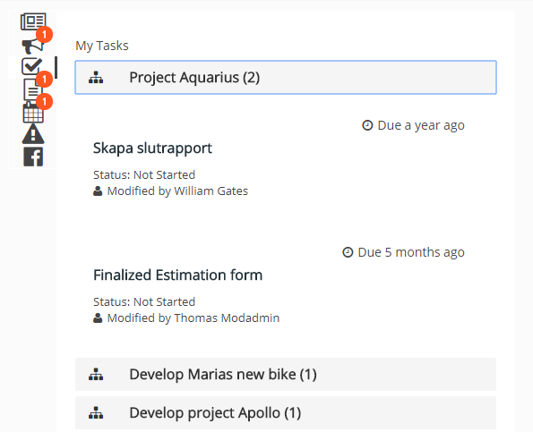
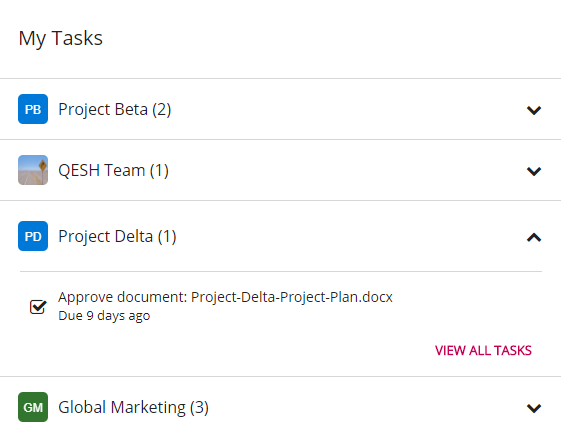
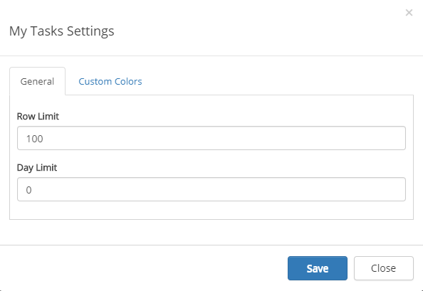
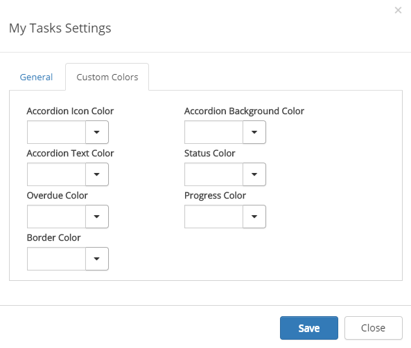

The My Tasks Control aggregates all tasks that have been assigned to the current user (from all sites, not only the ones the user is following).
Note! The My Tasks Control is based on the search engine in SharePoint. It may take several minutes before a task assigned to the current user in a team site is shown on the start page.
All sites with tasks assigned to the user is displayed in a list, with the number of tasks assigned in each site.
The My taskslist is often part of the Notification panel but can also be added as a separate control, as a web part on a legacy page, or a block on a Quick Page.
Here's an example of a My Tasks list in Notification Panel:

The user can then click a site to see more information about the tasks there, for example:

Settings for the control are in this case handled through the notification panel, see:
You can place the My Tasks control as a web part on any legacy page, or as a block on a Quick Page.
Here's an example when My Tasks is used on a Quick Page:

To change the settings for the control, activate the edit switch and then click the settings gear. This will open the settings dialog.

